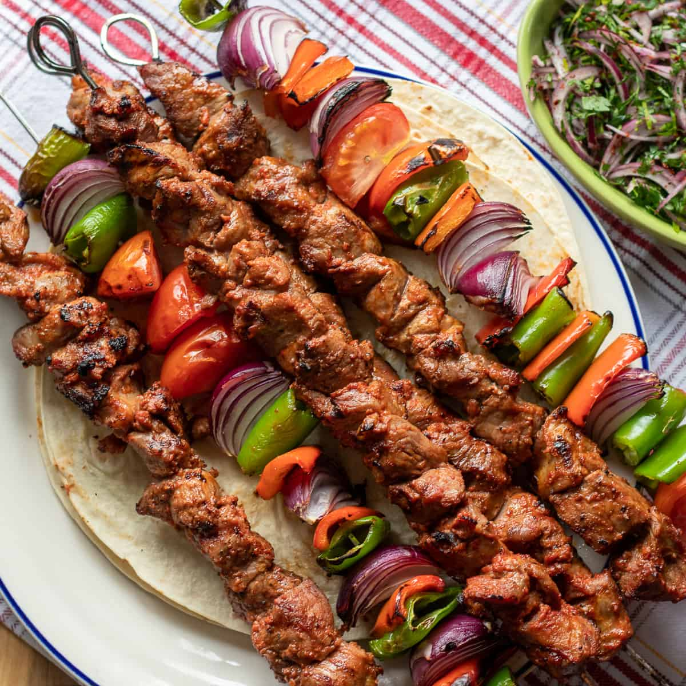

kebab

description
Kebab is a popular dish originating from the Middle East, with variations found in cuisines across the world. It
typically consists of seasoned meat—such as lamb, beef, chicken, or fish—grilled or roasted over a flame or on
skewers. Vegetarian versions also exist, using ingredients like paneer, tofu, or vegetables. The word "kebab" is
derived from the Arabic word "kabab," meaning "to burn or roast."
ingredients
- Ground meat (lamb, beef, or chicken)
- Onions
- Garlic
- Spices (cumin, coriander, paprika)
- Fresh herbs (parsley or cilantro)
steps
- Finely chop the onions and garlic.
- Mix the ground meat with chopped onions, garlic, spices, and fresh herbs.
- Form the mixture into kebab shapes (either patties, skewers, or logs).
- Grill the kebabs over medium heat or cook in a pan until fully cooked.
- Serve hot with naan, rice, or salad.